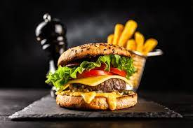

Burger Dish

Description:
a popular sandwich made from ground meats that are formed into a patty,
cooked, and placed between two halves of a bun. and this burger is made with cow meat.
Ingredients:
- 1 Large egg
- ½ Teaspoon salt
- ½ Teaspoon ground black pepper
- 1 Pound ground beef
- ½ Cup fine dry bread crumps
Steps:
- Preheat an grill for high heat and lighly oil grate.
- Whisk together egg, salt, pepper, bread crumbs, and ground beef and mix!
- Place patties on the preheated grill, Cook 6 to 8 minutes each side.
Should be Ready to eat, Enjoy!